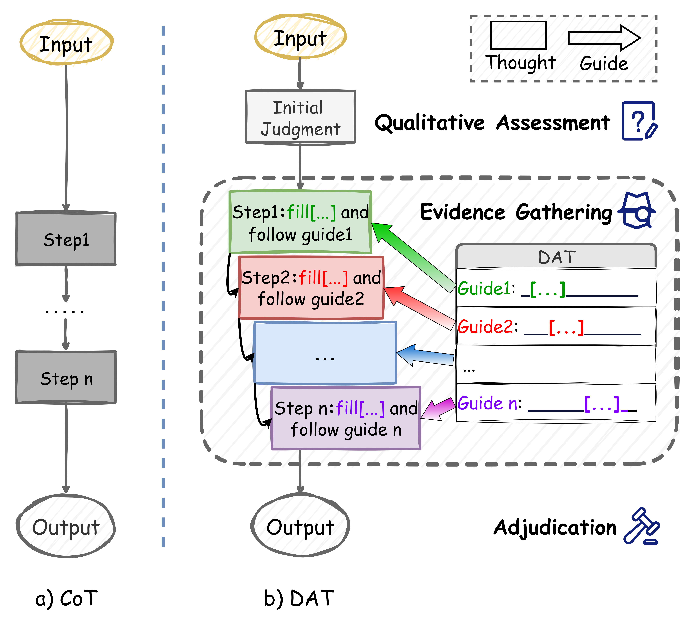
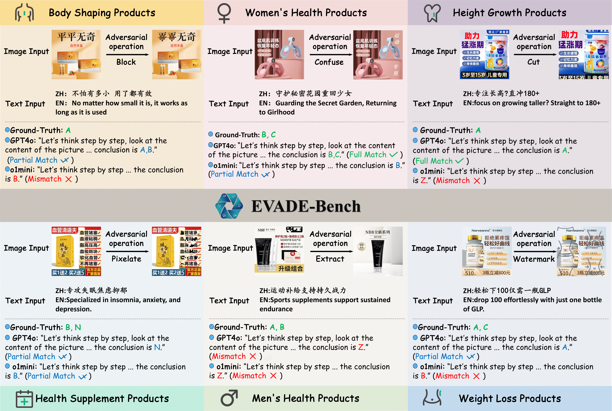
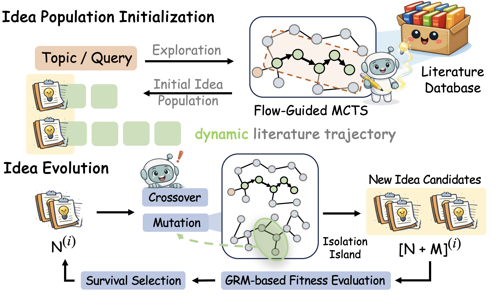
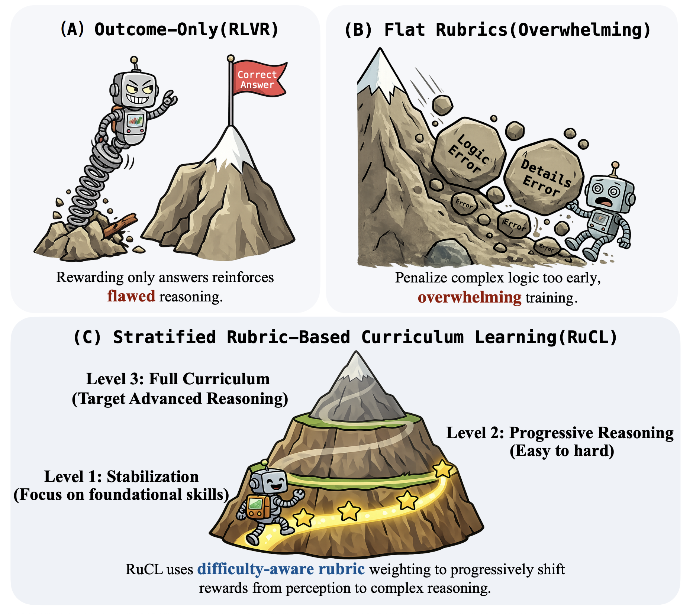

First Author
|
|

|
Structuring Reasoning for Complex Rules Beyond Flat Representations
Zhihao Yang*,
Ancheng Xu*,
Jingpeng Li,
Liang Yan,
Jiehui Zhou,
Zhen Qin,
Hengyu Chang,
Yukun Chen,
Longze Chen,
Ahmadreza Argha,
Hamid Alinejad-Rokny,
Minghuan Tan,
Yujun Cai,
Min Yang
arXiv, 2025 [arXiv]
An approach which equips LLMs with a structured template to methodically gather and verify evidence within complex rule systems, drastically improving reasoning fidelity.
|
|

|
Evade: Multimodal benchmark for evasive content detection in e-commerce applications
Ancheng Xu*,
Zhihao Yang*,
Jingpeng Li,
Guanghu Yuan,
Longze Chen,
Liang Yan,
Jiehui Zhou,
Zhen Qin,
Hengyun Chang,
Hamid Alinejad-Rokny,
Bo Zheng,
Min Yang.
SIGIR 2026 (CCF-A) [project page] [arXiv]
EVADE-Bench introduces a multimodal benchmark to evaluate evasive content detection and provides a strong foundation for developing more robust detection systems.
|
Co-authored Papers
|
|

|
FlowPIE: Test-Time Scientific Idea Evolution with Flow-Guided Literature Exploration
Qiyao Wang,
Hongbo Wang,
Longze Chen,
Zhihao Yang,
Guhong Chen,
Hamid Alinejad-Rokny,
Hui Li,
Yuan Lin,
Min Yang.
arXiv, 2026. [arXiv]
FlowPIE tightly couples literature retrieval with idea generation through flow-guided search and test-time evolution, producing research ideas that are more novel, diverse, and feasible than strong LLM- and agent-based baselines.
|
|

|
RuCL: Stratified Rubric-Based Curriculum Learning for Multimodal Large Language Model Reasoning
Yukun Chen,
Jiaming Li,
Longze Chen,
Ze Gong,
Jingpeng Li,
Zhen Qin,
Hengyu Chang,
Ancheng Xu,
Zhihao Yang,
Hamid Alinejad-Rokny,
Qiang Qu,
Bo Zheng,
Min Yang.
ICML 2026 (CCF-A) [arXiv]
RuCL reframes curriculum learning around reward design by stratifying rubrics according to model competence, then dynamically reweighting them to progressively improve multimodal reasoning from perception to higher-order logic.
|
Alibaba Group, Taotian Group – Alimama Advertising Technology Department
- Research Intern, 2025
- Research Topic: Large Language Models (LLMs) and Multimodal Intelligence
|
{kind=link}